Design at Nova
Architecture begins with
proportion.
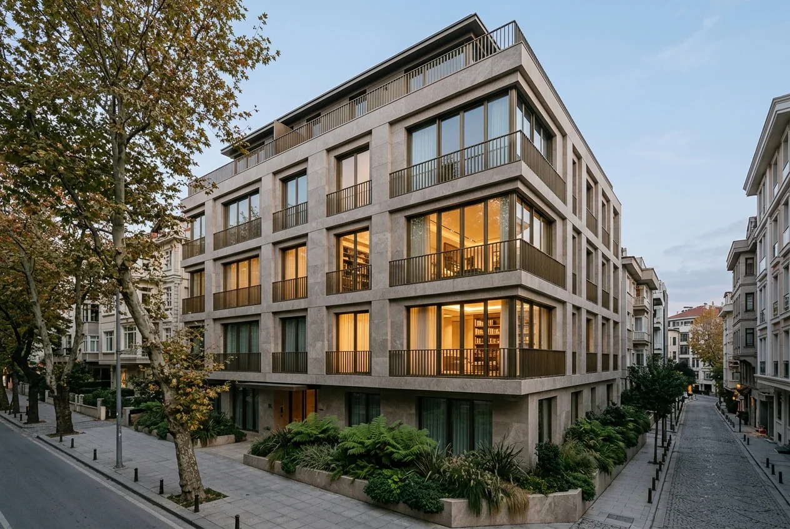
Designed from the
inside out.
A residence starts with the plan. Proportion, orientation, daylight and the way one room connects to the next all come before finishes are chosen. These early decisions shape the character of the home and guide the rest of the design.
We plan around daily life. Living areas need openness, private rooms need separation, and circulation should feel natural. Good architecture should make these things feel effortless.
Architecture
Architecture with
purpose.
At Nova, architecture starts with clear planning and sound proportions. Structure, circulation, façade and interior space are developed together so that the building works as a whole.
The façade is shaped by scale, orientation, privacy and the character of its setting. Inside, plans focus on usable room sizes, clear movement and natural light. The aim is simple: homes that still feel right years after they are built.
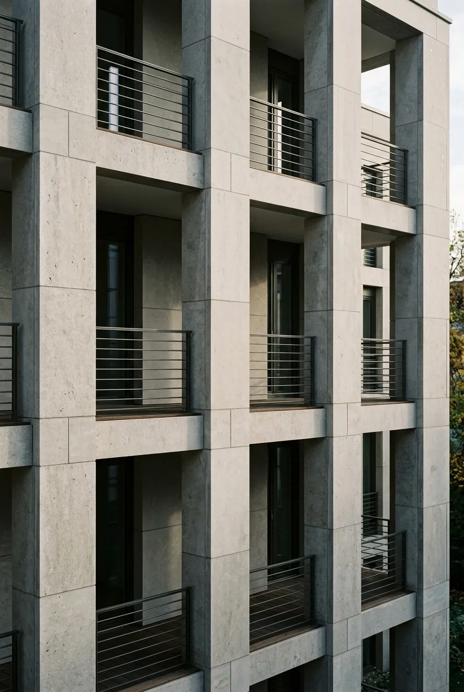
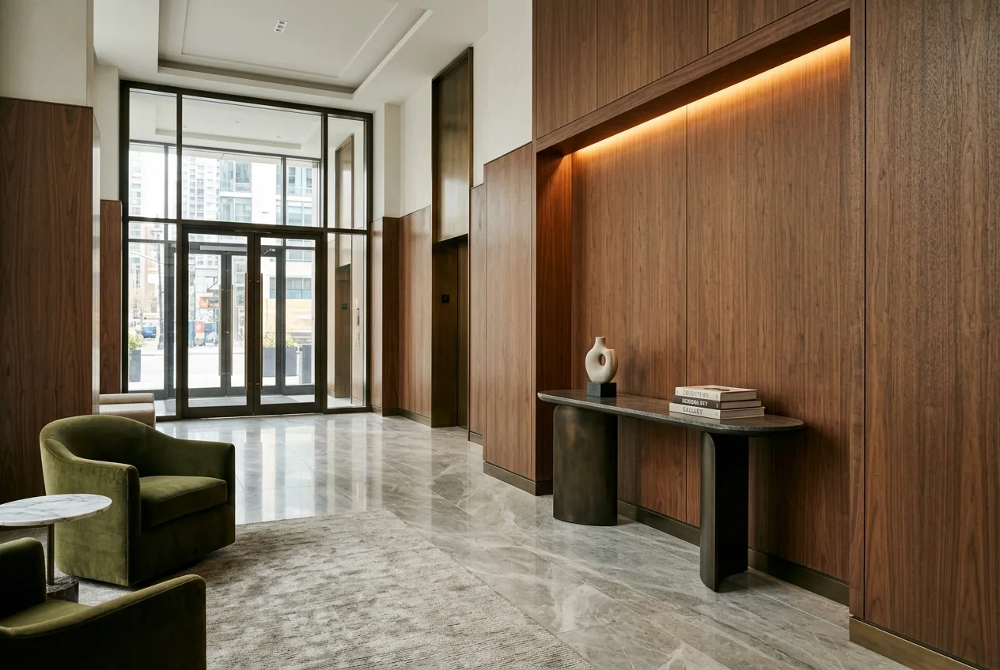
Space & Proportion
Designed around how space is lived.
Room size matters, but the relationship between rooms matters just as much. Sightlines, circulation, furniture placement, thresholds and transitions are worked through together so that the plan feels clear and connected.
Living spaces are kept open where it makes sense, while bedrooms and quieter areas retain privacy. Structure, service zones and architectural planning are coordinated early so the finished home is not shaped by last-minute compromises.
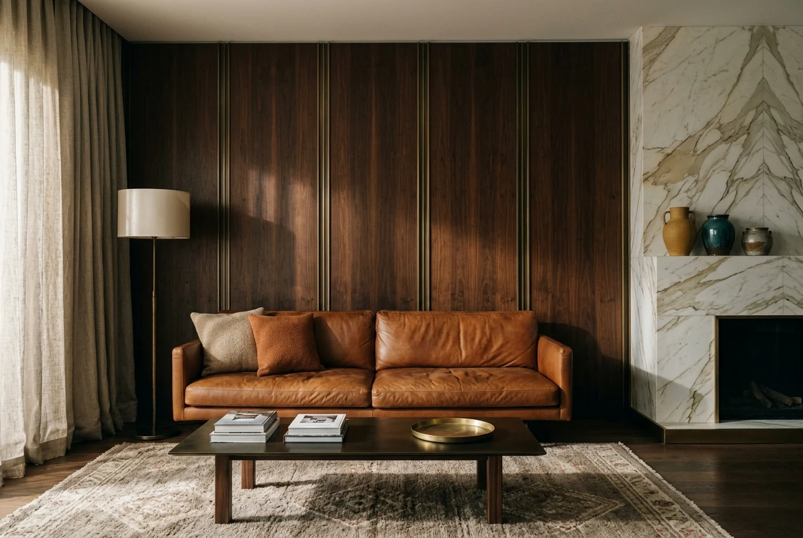
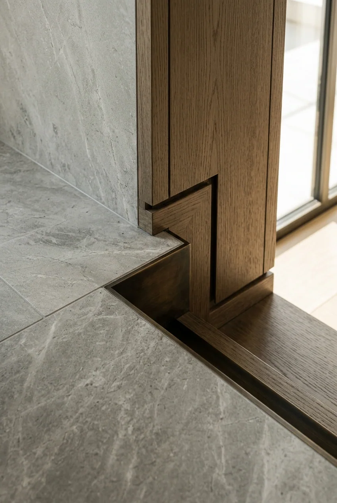
The result is a home that feels natural to move through.
Light
Light as an architectural material.
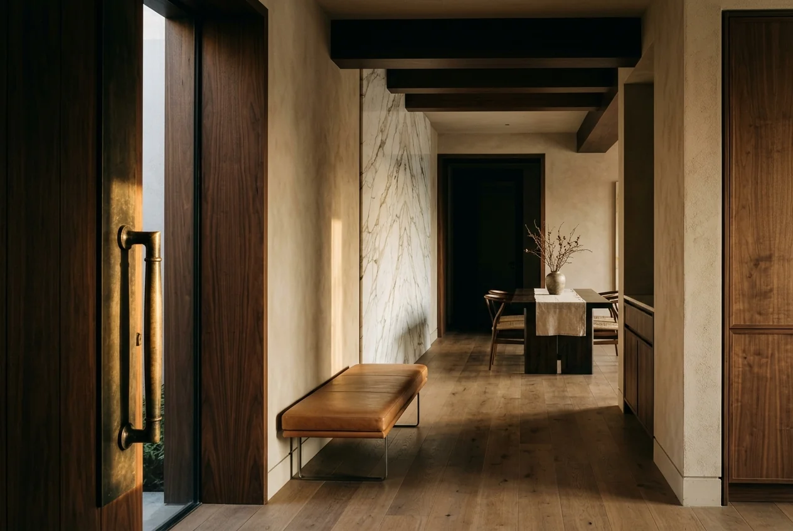
Controlled openness
Daylight changes a room throughout the day, so window size, orientation, room depth and façade openings are considered together from the start.
More glass is not always better. Views, privacy, solar gain and comfort all affect where and how openings are placed. In the evening, concealed lighting, joinery lighting and focused task lighting continue the same atmosphere without overwhelming the space.
A well-lit room should feel comfortable at every hour.
Materiality
Materials chosen
to last.
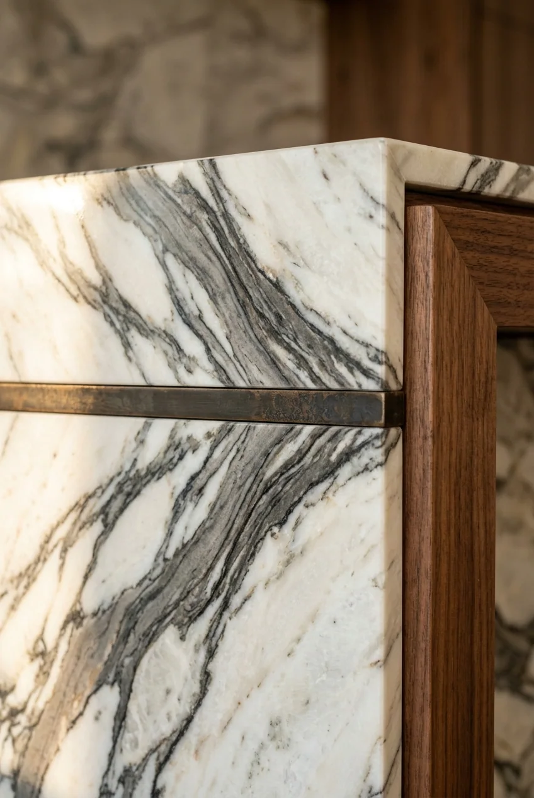
We choose materials for how they look, how they feel and how they perform in daily use. Stone, timber, metal, leather and glass all age differently, and that matters just as much as their appearance on the day a home is completed.
Details such as timber grain, stone veining, joints and material transitions are resolved carefully. A small number of well-chosen materials usually creates a stronger interior than a long list of finishes competing for attention.
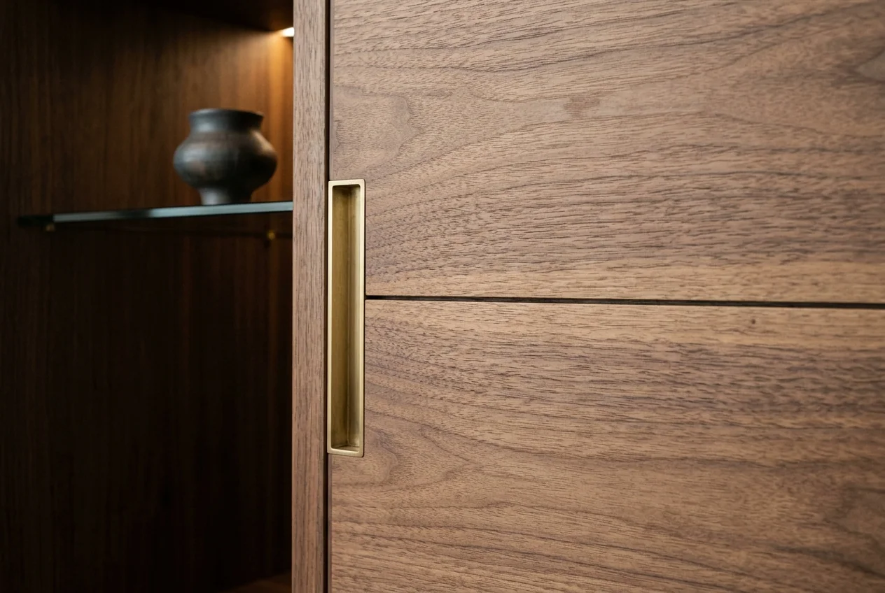
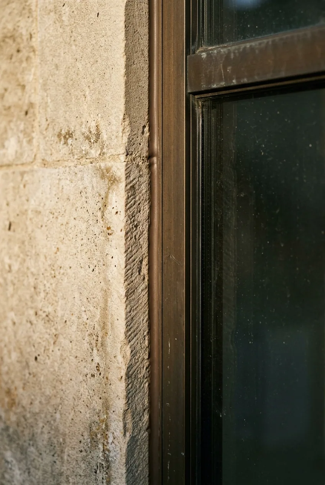
Quality is often easiest to see where two materials meet.
Material register
Five surfaces,
read closely.
These are the surfaces we return to most often. Turn a sample to see how light moves across it, and read where each one comes from, how it is finished and what happens to it over the years.
3D — drag to inspect
01 / 05 · Walnut
-
01
Walnut
- Origin
- European walnut, sliced into crown and quartered leaves and sequence-matched from a single log.
- Texture
- Fine open grain with darker heart streaks; quartered leaves show a faint ray fleck when light crosses them.
- Surface
- Hand-sanded, then oiled with a matt lacquer. No stain — the colour is the wood.
- Used for
- Living-room panelling, wardrobe fronts, door leaves, integrated shelving.
- How it ages
- Warms and darkens slightly in daylight over the first years. Light scratches can be re-oiled in place.
-
02
Bookmatched stone
- Origin
- Blocks chosen at the quarry and cut so that neighbouring slabs mirror each other along the vein.
- Texture
- Veining runs through the joint without a break; the pattern reads before the sheen does.
- Surface
- Honed to a low sheen, mitred and hand-polished at the edges, sealed against staining.
- Used for
- Entrance walls, fireplace surrounds, bathroom slabs, kitchen worktops.
- How it ages
- Colour holds. Honed surfaces pick up a soft sheen where hands and daylight reach them daily.
-
03
Aged bronze
- Origin
- Solid and clad bronze, patinated and finished by hand in the workshop rather than coated on site.
- Texture
- A fine brushed grain under a warm brown-gold patina that shifts as you move past it.
- Surface
- Patinated, then waxed. Edges are left a little brighter where the hand naturally falls.
- Used for
- Ironmongery, joinery pulls, reveal trims, lighting details, balustrade rails.
- How it ages
- Darkens where it is left alone and brightens where it is touched. That contrast is intended.
-
04
Leather
- Origin
- Full-grain aniline-dyed hides, tanned in Europe and cut for the piece they are made for.
- Texture
- Pores and growth marks left visible; nothing embossed, nothing corrected.
- Surface
- Wax finish, stitched in a matching tone with the seam pulled tight over the frame.
- Used for
- Seating, headboards, wardrobe interiors, drawer linings, handrail wraps.
- How it ages
- Softens and darkens along seats and armrests. Marks read as use, not as damage.
-
05
Smoked glass
- Origin
- Body-tinted float glass, cut and polished for joinery fronts and screen elements.
- Texture
- A grey-brown tint that deepens with thickness while the reflection stays sharp.
- Surface
- Polished edges; low-iron on clear runs so the tint reads evenly across a set of doors.
- Used for
- Cabinet fronts, room dividers, shower screens, bar and shelving units.
- How it ages
- Stable. It does not yellow, and the tint stays as it was specified.
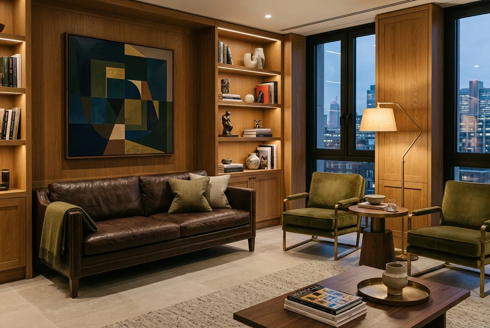
Interiors
Warm interiors, carefully
resolved.
The interior is designed together with the architecture. Wall panelling, built-in joinery, lighting, material transitions and service details are coordinated from the beginning so that the rooms feel complete, not assembled in layers afterwards.
The palette is warm and controlled. Timber, stone, metal, leather and textiles bring depth without making the space feel busy. Furniture, artwork and objects give a home personality; they should sit naturally within the architecture, not fight against it.
Good quality often appears in small moments — how a door closes, where two panels align, the weight of a handle, the depth of a reveal or the feel of a surface.
Detail
The smallest details often say
the most.
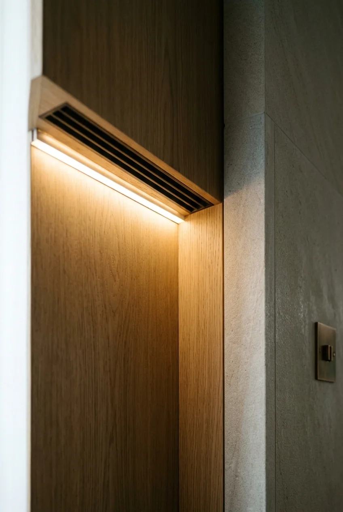
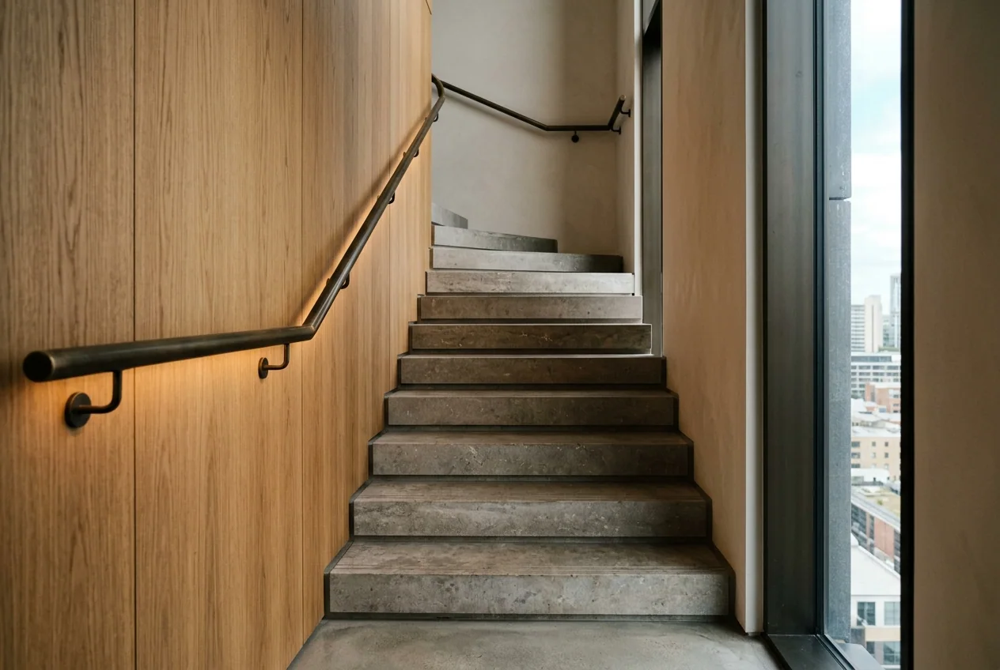
Shadow gaps, thresholds, joinery lines, metalwork, integrated vents and concealed services are all worked through before the space is finished. None of these details needs to draw attention to itself; when they are done properly, the room simply feels more complete.
Landscape
Architecture continues
outside.
Landscape is part of the way a residence is experienced. Entrances, terraces, courtyards, planting and outdoor seating are planned together with the building so the transition between inside and outside feels natural.
Mature trees, evergreen planting and seasonal species are selected to give privacy, shade and depth. The landscape should feel established, not decorative.
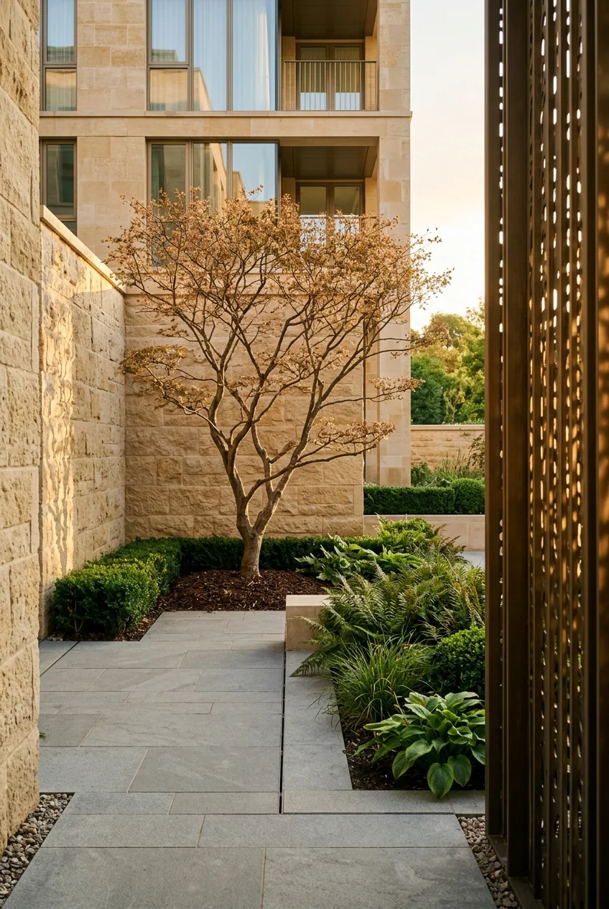
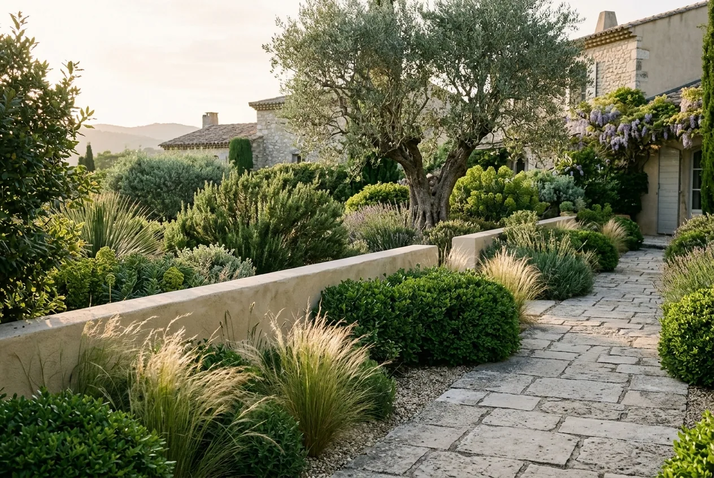
Architecture and landscape should belong to the same place.
Context
Designed for its place.
Every project begins with its surroundings. The street, neighbouring buildings, orientation, vegetation, views and daylight all have an effect on the final design.
This matters especially in established residential areas such as Bağdat Caddesi and its surrounding neighbourhoods. New buildings need to meet contemporary expectations without ignoring the scale and character of the streets they become part of.
A building should respond to where it stands.
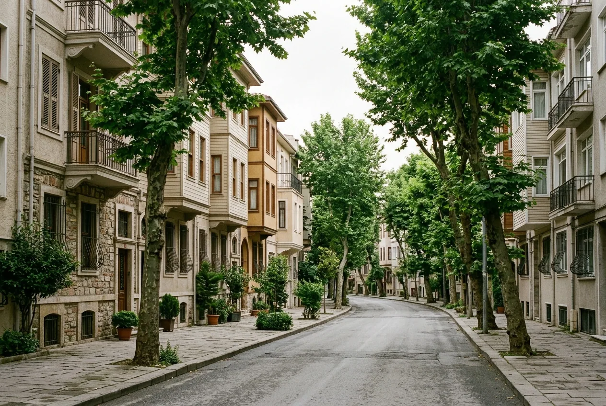
The design process
From First Line
to Final Detail
-
01
Context
Site conditions, orientation, planning rules and the surrounding neighbourhood set the starting point.
-
02
Proportion
Room relationships, circulation and structural geometry are developed together as one plan.
-
03
Material
Materials are chosen for quality, durability, texture and how well they work together in the finished space.
-
04
Coordination
Architecture, structure, façade, interiors and building services are coordinated before construction moves forward.
-
05
Detail
Key junctions are checked through drawings, samples, mock-ups and site review before final installation.
Design & execution
A design is only as good as
the way it is built.
Good drawings are not enough on their own. Dimensions, substrates, tolerances and material junctions all need to be checked during construction so that the original design is not lost on site.
Samples and mock-ups are used where needed to review colour, texture, grain direction and the way materials meet before final installation.
What is resolved on paper should still be resolved when the building is finished.
Design and construction
belong together.
Architecture only works when structure, façade, waterproofing and building services are properly coordinated behind it. For Nova, design quality is closely tied to how accurately the project is engineered and built.
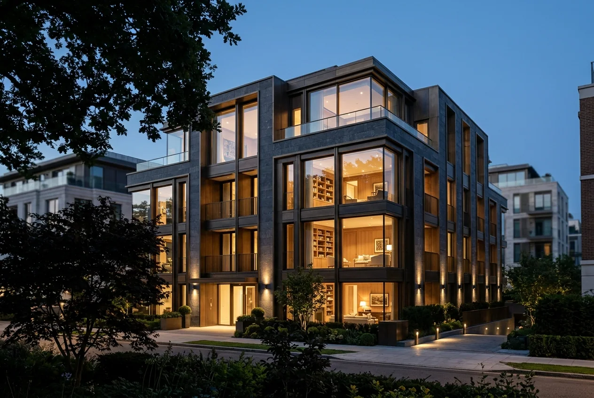
NovaBuild beyond living